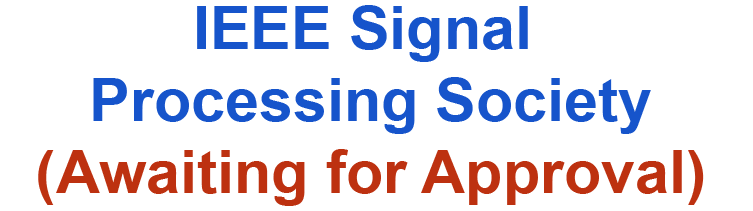
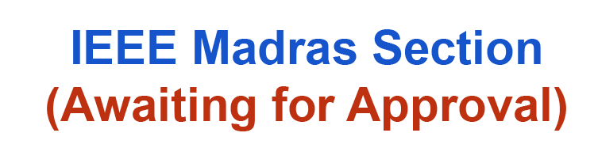

The Department of Biomedical Engineering, SSNCE is organising the Ninth International Virtual Conference on Biosignals, Images, and Instrumentation (ICBSII 2023) during March 16 - 17, 2023. This invitation is open for all academicians, research scholars, Post-Docs, PG and UG students working in the field of Biomedical Engineering and related areas. This conference would be an excellent platform for researchers, academicians, and industry practitioners across the globe to showcase their novel ideas in the field of biomedical engineering with a specific focus on topics like biosignals, medical images, medical data analytics, and medical instrumentation.
ICBSII 2023 is an opportunity for medical engineering professionals from around the world who are involved in the field of healthcare to submit their original research papers which have not been submitted elsewhere in other conferences / journals.
Submit PapersAbout the Speaker
Dr. Srinivasan Ramachandran
Sr. Research and Development Scientist
Dr. Srinivasan Ramachandran is a biomedical scientist with multidisciplinary expertise in Medicine, Biomedical Engineering and Cell, Molecular & Systems biology domains. This blend of knowledge and training brings unique perspectives while addressing complex biomedical challenges. Dr. Srinivasan Ramachandran’s primary research focus has been (a) Molecular basis of misfolded protein disorders including Alzheimer’s, Lou Gehrig’s, Tauopathy, (b) Systems approach to oxidative stress response (c) Development of targeted drug delivery systems and (d) Biomedical technology development. His core skills being (a) Development and application of multimodal imaging techniques (optical, scanning probe and electron microscopy) for establishing the structure-activity relationship in biomedicine, (b) Understand disease mechanisms by applying cell, molecular and systems biology techniques to develop mechanistic models and validate them with gene/chemical perturbation methods. Digital health: Expertise in electronic health records, SNOMED CT, UMLS, FHIR, and healthcare analytics development.
Prof. Ajit P. Yoganathan
Regents' Professor Emeritus, Wallace H. Coulter Distinguished
Faculty Chair in Biomedical Engineering, Georgia Institute of
Technology, USA
Dr. Ajit P. Yoganathan is the Wallace H. Coulter Distinguished Faculty Chair and Associate Chair for Translational Research in the Wallace H. Coulter Department of Biomedical Engineering and a Regents’ professor at the Georgia Institute of Technology and Emory University. He is also the founder and the Director of the Center for Innovative Cardiovascular Technologies. He received a Bachelor of Science and a Doctor of Philosophy in Chemical Engineering in 1973 from University College, University of London and in 1978 from the California Institute of Technology, respectively. Since joining the faculty at Georgia Tech in 1979, Dr. Yoganathan has made significant professional contributions at both the national and international levels, and a played a key role in the creation of the master’s and Ph.D. degrees in bioengineering and the joint Ph.D. in Biomedical Engineering with the Emory University School of Medicine. Dr. Yoganathan’s 40+ year research career has been pioneering and translational in nature by applying basic engineering science to develop meaningful human health outcomes, specifically in the realm of cardiovascular engineering and biology. In his effort to take an interdisciplinary and translational approach to his research, Dr. Yoganathan has established collaborations with clinicians, scientists, and industry professionals world-wide. His work utilizes experimental and computational biomechanical techniques to study native and artificial heart valves, structure function of the left and right sides of the heart, congenital heart diseases, and to develop minimally invasive cardiovascular interventions. He also uses non-invasive techniques such as laser Doppler velocimetry, digital particle image velocimetry, and Doppler ultrasound and magnetic resonance imaging to study and quantify blood flow physiology in the cardiovascular system, both on the bench and in vivo. His research success has led to more than 400 peer reviewed journal articles in leading biomedical journals and more than 40 book chapters. He has also been an invited speaker to over 70 conferences/seminar around the world and has mentored more than 50 doctoral students, 35 masters’ students, and 30 post-doctoral trainees. Dr. Yoganathan’s career has been distinguished by a number of high honors. In 1985, Dr. Yoganathan was awarded an Alexander von Humboldt Fellowship from West Germany to spend 9 months at the Helmholtz Institute for Biomedical Engineering, Technical University of Aachen. He received the Edwin Walker Prize from the Institute of Mechanical Engineers, UK in 1988. In 1992, he was elected a founding fellow of the American Institute of Medical and Biological Engineering. The same year, he also spent six months at the University of Aarhus, Denmark as a Visiting Professor of the Danish Research Academy. He received the H.R. Lissner Award, for his contributions to the field of bioengineering in 1997 from the American Society of Mechanical Engineers. In 2005, he was awarded the Theo Pilkington Award, for his contributions to Biomedical Engineering education by the American Society of Engineering Education. That same year he was also appointed Chair of the Cardiovascular Sub-Committee (SC2), International Standards Organization Technical Committee (TC 150) on Implants for Surgery. In 2010 he was appointed the Founding Editor in Chief of Cardiovascular Engineering and Technology - the newest journal of the Biomedical Engineering Society which in 2015 was accepted to PubMed and received an impact factor of 1.064 in 2017. In 2012, he was selected to be the Biomedical Engineering Society’s Pritzker Lecturer Award, one of the highest honors given to a BMES Member. In 2012 he was also awarded the Ann Newman Lecturer Award from the Children’s Hospital of Philadelphia (CHOP) - the only engineer to have been awarded this honor. In 2015, in recognition of his significant contributions to the field of engineering, he was elected to the prestigious National Academy of Engineers in Washington, D.C. For his leadership and work on International and US standards on cardiovascular medical devices, he was presented the 2015 Standards Developer Award from the Association for the Advancement of Medical Instrumentation. In February of 2017 he was awarded the Tamils’ Information Lifetime Achievement Award, presented to him by the mayor of Toronto at City Hall in Toronto, Canada. Additionally, Dr. Yoganathan has been active in inventing and developing a variety of medical devices and currently has 16 issued U.S. patents, with another 5 patent applications under review. In October 2009 he licensed one of his patents on heart valve repair, of which he is co-inventor, to a major cardiovascular medical device company (Edwards Lifesciences). The device is currently in animal studies. In November of 2009 he co-founded APICA Cardiovascular using other co-invented intellectual property. APICA is situated in Galway, Ireland, with an engineering research office in Atlanta, GA. The company raised USD $5.5 million in venture capital funds. The company’s first product, a “bloodless” ventricular access and closure device, received CE mark approval in Fall 2013. APICA was acquired in July 2014 by Thoratec (the largest left ventricular assist device manufacturer) for USD $75 million. Another one of his inventions, a children’s continuous renal replacement therapy device, is currently under further development and initial animal studies, funded by a NIH challenge grant and a FDA pediatric device center grant have started. The impact of his contributions to clinicians is profound, especially in the area of congenital heart diseases. The surgical planning tool he envisioned together with Prof. Jarek Rossignac, called SURGEM, is one such practical application of fluid mechanics in treating kids born with half a heart (single ventricle). This anomaly occurs in 2 in 1000 of every child born in the USA and 4 in 1000 in China. As part of this pioneering and translational work, he - together with Dr. Kanter, Chief of Pediatric Cardiac Surgery at Emory and The Children’s Hospital of Atlanta (CHOA) - developed the Y-graft surgical operation in 2011, based on his Optiflo patent. The Y-graft operation was listed as one of the top innovations in 2013 by CHOA and has since been used in about 50 plus children in Atlanta, the Children’s Hospital of Philadelphia and Stanford University Children’s Hospital. Dr. Yoganathan also regularly works with medical device regulatory organizations. Since 1979 he has worked with the FDA and in 2004 he was appointed Chair of the International Standards Organization committee for implantable cardiovascular devices. This later appointment was a major achievement/honor which recognizes research contributions and leadership in the field of cardiovascular medical devices at an international level. This leadership appointment has major implications with respect to international standards work as well as the US national standards and further interactions with the Food and Drug Administration (FDA) and the European Union (EU) community. During decades of research on heart valves, he has also worked with every manufacturer that has a replacement valve on the American market, including St. Jude Medical, Edwards Lifesciences, Medtronic, Carbomedics, Sorin Biomedical, and Boston Scientific, as well as with a number of smaller (including start-up) biomedical companies. It is worth noting that all prosthetic heart valves in use in U.S. (since 1975) have been evaluated in Dr. Yoganathan’s lab either directly or indirectly. Additionally, he consults with the major CV imaging companies, such as Philips, GE and Siemens.
Prof. Sean Joseph Smith, Ph.D.
Professor in the Department of Special Education at the University
of Kansas, USA.
Sean J. Smith, is a Professor in the Department of Special Education at the University of Kansas. He is also the Past-President of the technology division for the Council for Exceptional Children, Innovations in Special Education Technology (ISET), and member of the Board for the National Down syndrome Congress. Dr. Smith’s research interests focus on innovations and technology solutions to support struggling learners and those with disabilities, particularly interventions aligned with the Universal Design for Learning (UDL) Framework. At present, Dr. Smith is the Principal Investigator on a federally funded project exploring the impact of virtual reality on struggling learners in the area of social emotional development. Sean has authored over 100 books and articles, given hundreds of scholarly presentations both nationally and internationally, and serves on various boards for journals, organizations, and parent groups focused on enhancing the lives of individuals with disabilities. Dr. Smith, with a variety of collaborators, has received and managed over $25 million of external research and development funds. Most importantly, Sean is the father of four children, one having Down syndrome. It is through this work as a father that Sean has sought to apply his knowledge of effective practices with parents, family members, and similar stakeholders as we look to enhance the lives of our children, ALL of our children!
Dr. Mamun Bin Ibne Reaz
Universiti Kebangsaan Malaysia, Malaysia
Mamun Bin Ibne Reaz a Professor in the Centre of Advanced Electronic and Communication Engineering, Faculty of Engineering and Built Environment, Universiti Kebangsaan Malaysia, Malaysia. He received his B.Sc. and M.Sc. degree in Applied Physics and Electronics, both from University of Rajshahi, Bangladesh, in 1985 and 1986, respectively. He received his D.Eng. degree in 2007 from Ibaraki University, Japan. He is author and co-author of more than 300 research articles in design automation, IC design for biomedical applications and Smart Home. He is also the recipients of more than 50 research grants (national and international).
Prof. Dinesh Kalyanasundaram
Centre for Biomedical Engineering, IIT Delhi
Dr. Dinesh Kalyanasundaram is a Professor in the Centre for Biomedical Engineering at IIT Delhi. He is passionate about creating medical devices. He is a Biomedical consultant: L&T and strongly believes in innovation and inter-disciplinary research as a means to achieve innovation. His areas of expertise includes micromachining of materials, product design, solid mechanics (specific areas) DNA based diagnostics, lab-on-chip device design, orthopaedics, orthodontics, surface modification, laser machining. His research group is focused on designing medical devices, validating their performance clinically and developing associated manufacturing processes, developing both diagnostic devices as well as implantable devices and also work on tissue biomechanics and development of musculoskeletal models.
Dr. Neha Singh, Senior Scientist
Center for Advanced Research and Excellence in Disability &
Assistive Technology (CARE-DAT) Indian Institute of Technology
Delhi (IITD)
Dr. Neha Singh is a Research Scientist in Centre for Biomedical Engineering at IIT Delhi after completing Ph.D. from IIT Delhi. Her interest lies in interdisciplinary research in neuro-engineering for developing innovative rehabilitation strategies, biomedical devices and its clinical validation, with a special focus on brain stimulation for neurorehabilitation of patients with stroke. She has published few international patents and copyrights. Her research area also includes biomedical signal processing, neurophysiology and neuroimaging.
Dr. David Belo
Senior Scientist, Fraunhofer Portugal AICOS, Portugal
Dr. David Belo is a Portuguese Biomedical Engineer with a vast and multidisciplinary experience. David Belo has received his Ph.D. in Biomedical Engineering from the NOVA University of Lisbon in 2021 in applying deep learning algorithms for several biosignals' paradigms. His research activity was mainly in biosignal processing and machine learning to extract meaningful information and make automatic decision support systems, and, on the industry side, he earned experience in programming mobile applications, reporting services, and administration software. His specialization includes Deep Neural Networks, Tensorflow, Theano, Biosignal Processing, Machine Learning. In addition to this, he has participated in the summer of 2019 in the NASA Frontier Development Lab in developing AI tools for aiding the Astronaut Health program.
Dr. Clement Yuen
Lecturer (Part-time), Nanyang Technological University, Singapore.
Dr. Clement Yuen received his B.Eng and PhD degree in Electrical and Electronics Engineering from Nanyang Technological University (NTU) in Singapore. He is a part-time lecturer in the School of Chemical and Biomedical Engineering at NTU. His research is focused on surface-enhanced Raman spectroscopy and other imaging techniques for biomedical applications. He was the recipient of the Mistletoe Research fellowship, Lee Kuan Yew (LKY) post-doctoral fellowship, and Agency for Science, Technology and Research (A*STAR) graduate fellowship. He was also the former founder of his own startup company. His research outcomes include 1 US patent and 3 invention disclosure, 1 invited book chapter, 32 international technical journals papers, and 24 conference papers. Moreover, his test kit for malaria received interviews by the Channel News Asia (CNA) and a series of other media including Phys.org, Scienmag, etc. His microneedle-based enhanced Raman work has been featured in Advanced Science News, and the editor's choice in Journal of Biophotonics.
Dr. Rahuman S. Malik Sheriff
Project Leader (BioModels), European Bioinformatics Institute,
European Molecular Biology Laboratory (EMBL-EBI), Welcome Trust
Genome Campus, Hinxton Cambridge CB10 1SD, UK, London, England,
United Kingdom.
Dr. Rahuman S. Malik Sheriff is an experienced scientist with a demonstrated history of working in the research industry. Skilled in Mathematical modeling, multivariate statistics, Bioinformatics, digital image processing, and Bigdata analytics. Leads a team of members to develop novel approaches, tools, and resources for modeling biomedical system. With a Doctor of Philosophy (Ph.D.) focusing on finding patterns in big and complex biological data set and modeling quantitative causal network from Max Planck Institute of Molecular Physiology & TU.
Dr. M. Murugappan
Associate Professor - Electronics and Communication Engineering,
Kuwait College of Science and Technology, Kuwait.
Dr. M.Murugappan received his M.E. (Applied Electronics), and Ph.D. (Mechatronic Engineering) from Anna University, India, and Universiti Malaysia Perlis, Malaysia, respectively, in 2006, and 2010. Since February 2016, he has been working as an Associate Professor in the Department of Electronics and Communication Engineering at the Kuwait College of Science and Technology (KCST), Kuwait. He had more than 15 years of research and teaching experience in different countries, such as India, Malaysia, and Kuwait. His publications and research have been recognized with various research awards, medals, and certificates. In the fields of Experimental Psychology, Artificial Intelligence, and Cognitive Neuroscience, he was ranked in the top 2-percent of scientists in the world by Stanford University researchers in 2020 and 2021. More than 125 of his research articles have appeared in peer-reviewed journals, conference proceedings, and book chapters. A maximum score of 4807 citations is recorded by Google Scholar, along with an H index of 36 and an I10 score of 73 (Ref: Google Scholar citations). His research has been awarded nearly $2.5 Million by the government of Malaysia, Malaysia, and Kuwait Foundation for Advancement of Sciences (KFAS), Kuwait. He has also guided 14 postgraduate students, 9 Ph.D. and 5 M.Sc. He is currently an Editorial Board member for PLOS ONE, Human Centric Information Sciences, Journal of Medical Imaging and Health Informatics, and International Journal of Cognitive Informatics. Currently, he serves as the Chair of Educational Activities in the IEEE Kuwait Section. He is primarily interested in Affective Computing, Affective Neuroscience, IoT, IoMT, Cognitive Neuroscience, Brain-Computer Interface, Neuromarketing, Neuroeconomics, Medical Image Processing, Machine Learning, and Artificial Intelligence. He is a member of professional international societies such as IEEE, IET, IACSIT, IAENG, and IEI. He has given expert talks in Affective Computing, Artificial Intelligence in Healthcare, and Affective Neuroscience.
Dr.K.Mohanavelu
Scientist and Joint Director, DRDO, - Defence Bioengineering
&Electromedical Laboratory, Bengaluru.
Dr. K. Mohanavelu joined as Scientist in DEBEL, DRDO in 2002, serving 20 years of experience in R&D for Biomedical Product Research. He is currently the Joint Director, Head of Biomedical Technology in DEBEL, DRDO. His post graduation and PhD was in Biomedical Engineering from IIT – Madras and Anna University respectively. His areas of research include Wearable Electronics & Remote Health Monitoring, High Altitude Life Support Technology, Brain Computer Interface / Augmented Cognition, Human centric Robotics. He is actively involved in the development of Biomedical Products for COVID Management.
Dr. B. Sivakumar
Prof and HOD Bioengineering, Christian Medical College, Vellore.
Dr. B. Sivakumar is a Professor and head of the department of Bioengineering at the Christian Medical College, Vellore. He was a postdoctoral research fellow in Human Robotics Group, Imperial College, London, UK, Feb 2010 - Oct 2012. He received his Ph.D. in Bioengineering, from ASU, Tempe, USA. He is the head of the Biological Learning and Rehabilitation (BioRehab) group, which focuses on human motor learning and rehabilitation. His main research interests include, development and validation of tools and training methods for delivery of neurorehabilitation, and quantitative human analysis.
Prof. Renu John
Professor, Department of Biomedical Engineering IIT Hyderabad
Dr. Renu John is a Professor in the Department of Biomedical Engineering at IIT Hyderabad. He has obtained a PhD in Physics (Optics) from Indian Institute of Technology Delhi, in 2006. He served as a Research Associate at the Fitzpatrick Center for Photonics, Duke University, Durham, NC, USA, from June 2006 to May 2008 and at Beckman Institute for Advanced Science and Technology, University of Illinois, Urbana-Champaign, USA, from May 2008 to Nov 2010. His journey with the department of Biomedical Engineering at IIT Hyderabad began in 2010 from Assistant Professor to Professor and Head of the department. He is the Co-Founder and Head of Centre for Healthcare Entrepreneurship (CfHE) at IIT Hyderabad which was established in 2016 with an objective to catalyze healthcare innovation with a focus on affordable solutions to address healthcare needs of India. His areas of expertise includes biomedical imaging, optical coherence imaging and microscopy, nanoparticles and target-specific imaging.
Dr. Mamun Bin Ibne Reaz
Universiti Kebangsaan Malaysia, Malaysia
Mamun Bin Ibne Reaz a Professor in the Centre of Advanced Electronic and Communication Engineering, Faculty of Engineering and Built Environment, Universiti Kebangsaan Malaysia, Malaysia. He received his B.Sc. and M.Sc. degree in Applied Physics and Electronics, both from University of Rajshahi, Bangladesh, in 1985 and 1986, respectively. He received his D.Eng. degree in 2007 from Ibaraki University, Japan. He is author and co-author of more than 300 research articles in design automation, IC design for biomedical applications and Smart Home. He is also the recipients of more than 50 research grants (national and international).
Prof. Dinesh Kalyanasundaram
Centre for Biomedical Engineering IIT Delhi
Dr. Dinesh Kalyanasundaram is a Professor in the Centre for Biomedical Engineering at IIT Delhi. He is passionate about creating medical devices. He is a Biomedical consultant: L&T and strongly believes in innovation and inter-disciplinary research as a means to achieve innovation. His areas of expertise includes micromachining of materials, product design, solid mechanics (specific areas) DNA based diagnostics, lab-on-chip device design, orthopaedics, orthodontics, surface modification, laser machining. His research group is focused on designing medical devices, validating their performance clinically and developing associated manufacturing processes, developing both diagnostic devices as well as implantable devices and also work on tissue biomechanics and development of musculoskeletal models.
Prof. Renu John
Professor Department of Biomedical Engineering, IIT Hyderabad
Dr. Renu John is a Professor in the Department of Biomedical Engineering at IIT Hyderabad. He is the Co-Founder and Head of Centre for Healthcare Entrepreneurship (CfHE) at IIT Hyderabad which was established in 2016 with an objective to catalyze healthcare innovation with a focus on affordable solutions to address healthcare needs of India. His areas of expertise includes biomedical imaging, optical coherence imaging and microscopy, nanoparticles and target-specific imaging.
Dr. Justin Dauwels
Nanyang Technological University, Singapore
Justin Dauwels is an Associate Professor in School of Electrical & Electronic Engineering at Nanyang Technological University (NTU). In 2000 he received the engineering physics degree from the University of Ghent. He obtained a PhD degree in electrical engineering at the Swiss Polytechnical Institute of Technology (ETH) in Zurich in December 2005. Some of his projects include Mathematical modeling of the start and ending of epileptic seizures, Diagnosis of Alzheimer's disease from EEG signals, Machine learning techniques for guiding neurosurgery, Copula based modelling of extreme events and Copula based graphic models. His current projects include Advanced Multi-Sensor Anomaly Monitoring and Analytics for Gas Pipeline, Automated Detection of Seizure-Spectrum Patterns and Quantitative Neurological Outcome Prediction, Automatic Analysis of EEG for Neurological Patients by Deep Learning Methods.
Dr. Priya Lakshmi Narayanan
Postdoctoral Training Fellow Institute of Cancer Research, London,
United Kingdom
Dr. Priya Lakshmi Narayanan received her PhD degree in Biomedical Engineering for her work in developing an atlas of cerebellum for young children. She worked as a research scholar in MRC/UCT Medical Imaging Research Unit, University of Cape Town, South Africa from 2010 - 2015. She has also worked as a visiting academic in Athinoula A. Martinos center for Biomedical Imaging in Boston from July 2012 – December 2012. She has gained a considerable amount of experience working as an image analyst and deep neural network based framework development and its relevance for validation in breast cancer. Her expertise in image segmentation and cellular phenotype quantification along with complex data analysis and interpretation has resulted in significant research outputs in nature breast cancer and nature scientific reports. She won a Marie curie research fellowship and moved to the UK during her final year PhD research program. During her tenure at PathXL, UK she has been an active part of the patent for which she is recognised as an innovator while at PathXL in FastPath Project. She is actively working in understanding recurrence pathways and resistance mechanisms in breast cancer with Institute of Cancer Research for the past 4.5 years. Currently at UCL she works as a research fellow, she is active member of Department of computer science in building intelligent systems that help to predict acute myeloid leukemia. She initially started her career from a startup based in India, Optra Systems, Pune, after completing her Masters in 2007 from Madras Institute of Technology, Anna University, Chennai India. During her tenure she contributed to the detection of lumen in prostate cancer and micro array analysis for single cell detection.
Assoc Prof Ts. Dr. Kalaivani Chellappan
Department of Electrical, Electronics and Systems Engineering,
Universiti Kebangsaan, Malaysia
Dr. Kalaivani Chellappan is an Associate Professor in Faculty of Electrical, Electronics and Systems Engineering, Universiti Kebangsaan Malaysia since Nov 2011. She specializes in Healthcare Engineering. Her current research interests are Cardiovascular Engineering Modeling, Internet of Things in Healthcare and Data Modeling & Analytics. A holistic knowledge in management, engineering technology, healthcare and IT provides her the opportunity to be creative in supporting organizations to realize the modern empowerment science. Talent building and management empowerment through sustainable knowledge are the core values imbedded in all her project deliveries..
Dr. Joshua Ewen
MD Director, Clinical Neurophysiology Clinic and Laboratory
Kennedy Krieger Institute, United States
Dr. Joshua Ewen is a pediatric neurologist, developmentalist and electroencephalographer. He is director of the Clinical Neurophysiology Clinic and Laboratory at the Kennedy Krieger Institute and an associate professor in both the Department of Neurology at the Johns Hopkins University School of Medicine and the Department of Psychological and Brain Sciences at the Johns Hopkins University Krieger School of Arts and Sciences. Dr. Ewen attended Brown University and Tulane University School of Medicine, from which he graduated in 2000. He received training in general pediatrics at Cincinnati Children's Hospital Medical Center and then was one of the first graduates of the Kennedy Krieger/Johns Hopkins program in neurodevelopmental disabilities. He subsequently took a year of training in specialized training in clinical neurophysiology/epilepsy (Johns Hopkins). He is currently a neurologist and developmental paediatrician at Kennedy Krieger, where he sees patients with autism. He also interprets clinical EEGs at Kennedy Krieger’s Clinical Neurophysiology Laboratory and Epilepsy Monitoring Unit, of which he is medical director. A large portion of his effort is focused on research into the cognitive alterations in developmental disabilities. Dr. Ewen's research involves the use of behavioural and EEG-based techniques to study developmental disabilities and basic questions within psychology and neuroscience. His current primary work focuses on the borderlands between cognition and motor control in autism, but he also has ongoing research in ADHD. He has strong collaborations with neuroengineers and signal processing experts. He is further focused on the process for developing and validating biomarkers.

Awaiting for approval 

Awaiting for approval 

.jpg)
.jpg)
.jpg)
.jpg)
.jpg)
.jpg)
.jpg)
.jpg)
.jpg)
.jpg)
.jpg)
.jpg)
.jpg)
.jpg)
.jpg)
.jpg)
.jpg)
.jpg)
.jpg)
.jpg)
.jpg)
.jpg)
.jpg)
.jpg)
.jpg)
.jpg)
.jpg)


.jpg){kind=link}
.jpg){kind=link}
.jpg){kind=link}
.jpg){kind=link}
.jpg){kind=link}
{kind=link}